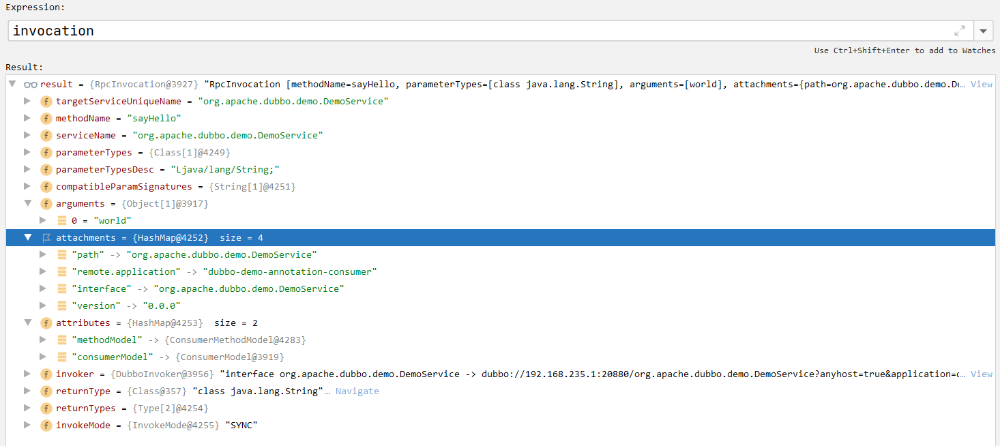

待做事项
第一章 基本使用 版本：2.7.7
对于dubbo，一般采用zookeeper作为注册中心
1 2 3 4 5 6 7 8 9 10 11 12 13 14 15 16 17 18 <dependency > <groupId > org.apache.dubbo</groupId > <artifactId > dubbo</artifactId > <version > 2.7.16</version > </dependency > <dependency > <groupId > org.apache.curator</groupId > <artifactId > curator-framework</artifactId > <version > 4.3.0</version > </dependency > <dependency > <groupId > org.apache.curator</groupId > <artifactId > curator-recipes</artifactId > <version > 4.3.0</version > </dependency >
什么是RPC
有了HTTP为什么还需要RPC
第二章 Dubbo SPI SPI全称Service Provider Interface，是一种服务发现机制。它的本质是将接口的实现类的全限定名称配置在文件中，并且由服务加载器读取配置文件，加载实现类。这样在运行的时候就可以动态的为接口替换实现类。比如我们实现RPC的时候需要序列化机制，不同的数据需要不同的序列化机制，就可以通过SPI机制来更换，从而不需要修改源代码，有点类似于IOC思想，目的是为了解耦。
但是如果一个接口配置了多个实现类，SPI机制会将这些实现类统一进行加载，使用遍历的方式。对于不想用的类，也会被加载并实例化，造成浪费。
Dubbo的SPI对Java的SPI进行了加强，详情见后续分析。
解决了JavaSPI初始化时加载全部扩展类的缺陷，采取按需加载机制。
增加对扩展点的IOC和AOP支持。
增加缓存存储实例，提高读取性能
2.1 测试样例 项目结构如图所示：
代码如下：
1 2 3 4 5 6 7 8 9 10 11 12 13 14 15 16 17 18 19 20 package top.noaharno.dubbo.spi;import org.apache.dubbo.common.extension.SPI;@SPI public interface Animal {void sayHello () ;public class Chicken implements Animal {public void sayHello () {"Hello, I am Chicken" );public class Duck implements Animal {public void sayHello () {"Hello, I am Duck" );
SPI配置文件：
1 2 chicken = top.noaharno .dubbo.spi.Chickenduck = top.noaharno .dubbo.spi.Duck
测试代码：
1 2 3 4 5 6 7 public static void main (String[] args) {Animal chicken = extensionLoader.getExtension("chicken" );Animal duck = extensionLoader.getExtension("duck" );
运行结果：
2.2 源码分析 getExtensionLoader 首先是ExtensionLoader.getExtensionLoader(Animal.class)，这个总体来说就是从一个ConcurrentHashMap缓存中找到Animal类对应的ExtensionLoader，如果不存在，就创建一个并返回。
1 2 3 4 5 6 7 8 9 10 11 12 13 14 15 16 17 18 19 20 21 22 private static final ConcurrentMap<Class<?>, ExtensionLoader<?>> EXTENSION_LOADERS = new ConcurrentHashMap <>(64 );public static <T> ExtensionLoader<T> getExtensionLoader (Class<T> type) {if (type == null ) {throw new IllegalArgumentException ("Extension type == null" );if (!type.isInterface()) {throw new IllegalArgumentException ("Extension type (" + type + ") is not an interface!" );if (!withExtensionAnnotation(type)) {throw new IllegalArgumentException ("Extension type (" + type +") is not an extension, because it is NOT annotated with @" + SPI.class.getSimpleName() + "!" );if (loader == null ) {new ExtensionLoader <T>(type));return loader;
getExtension 那如何使用指定类对应的ExtensionLoader获取到指定的实例呢？我们深入分析代码extensionLoader.getExtension("chicken")
ExtensionLoader.class：
1 2 3 4 5 6 7 8 9 10 11 12 13 14 15 16 17 18 19 20 21 22 23 24 25 26 27 28 29 30 31 32 33 public T getExtension (String name) {return getExtension(name, true );public T getExtension (String name, boolean wrap) {if (StringUtils.isEmpty(name)) {throw new IllegalArgumentException ("Extension name == null" );if ("true" .equals(name)) {return getDefaultExtension();final Holder<Object> holder = getOrCreateHolder(name);Object instance = holder.get();if (instance == null ) {synchronized (holder) {if (instance == null ) {return (T) instance;
getDefaultExtension 核心代码：
1 2 3 4 5 6 7 8 9 10 11 12 13 14 15 16 17 18 19 20 private void cacheDefaultExtensionName () {final SPI defaultAnnotation = type.getAnnotation(SPI.class);if (defaultAnnotation == null ) {return ;String value = defaultAnnotation.value();if ((value = value.trim()).length() > 0 ) {if (names.length > 1 ) {throw new IllegalStateException ("More than 1 default extension name on extension " + type.getName()": " + Arrays.toString(names));if (names.length == 1 ) {0 ];
总结：如果我们使用extensionLoader.getExtension的时候，传入的参数是true，则会使用默认的扩展，但是需要在@SPI注解中指明默认的扩展是哪个。
createExtension 创建扩展：
1 2 3 4 5 6 7 8 9 10 11 12 13 14 15 16 17 18 19 20 21 22 23 24 25 26 27 28 29 30 31 32 33 34 35 36 37 38 39 40 41 42 43 44 45 46 47 48 49 50 51 52 53 54 private T createExtension (String name, boolean wrap) {if (clazz == null || unacceptableExceptions.contains(name)) {throw findException(name);try {T instance = (T) EXTENSION_INSTANCES.get(clazz);if (instance == null ) {if (wrap) {new ArrayList <>();if (cachedWrapperClasses != null ) {if (CollectionUtils.isNotEmpty(wrapperClassesList)) {for (Class<?> wrapperClass : wrapperClassesList) {Wrapper wrapper = wrapperClass.getAnnotation(Wrapper.class);if (wrapper == null return instance;catch (Throwable t) {throw new IllegalStateException ("Extension instance (name: " + name + ", class: " +") couldn't be instantiated: " + t.getMessage(), t);
通过getExtensionClasses获取该接口所有的扩展类，并获取name对应的扩展类clazz
通过反射创建clazz的实例对象
向拓展对象中注入依赖（IOC）
将拓展对象包裹在相应的Wrapper对象中（AOP）
getExtensionClasses 获取所有的扩展类
1 2 3 4 5 6 7 8 9 10 11 12 13 private Map<String, Class<?>> getExtensionClasses() {if (classes == null ) {synchronized (cachedClasses) {if (classes == null ) {return classes;
从缓存中查找，如果没有就进行创建
loadExtensionClasses 1 2 3 4 5 6 7 8 9 10 11 12 13 14 15 16 17 18 19 private Map<String, Class<?>> loadExtensionClasses() {new HashMap <>();for (LoadingStrategy strategy : strategies) {"org.apache" , "com.alibaba" ),return extensionClasses;
每种加载策略都指定了不同的加载路径
loadDirectory 1 2 3 4 5 6 7 8 9 10 11 12 13 14 15 16 17 18 19 20 21 22 23 24 25 26 27 28 29 30 31 32 33 34 35 36 37 38 39 private void loadDirectory (Map<String, Class<?>> extensionClasses, String dir, String type, boolean extensionLoaderClassLoaderFirst, boolean overridden, String... excludedPackages) {String fileName = dir + type;try {null ;ClassLoader classLoader = findClassLoader();if (extensionLoaderClassLoaderFirst) {ClassLoader extensionLoaderClassLoader = ExtensionLoader.class.getClassLoader();if (ClassLoader.getSystemClassLoader() != extensionLoaderClassLoader) {if (urls == null || !urls.hasMoreElements()) {if (classLoader != null ) {else {if (urls != null ) {while (urls.hasMoreElements()) {URL resourceURL = urls.nextElement();catch (Throwable t) {"Exception occurred when loading extension class (interface: " +", description file: " + fileName + ")." , t);
总结：该方法主要是拼接好需要加载的文件的文件路径，然后根据文件路径获取到文件之后，调用loadResource进行逐条加载
loadResource 1 2 3 4 5 6 7 8 9 10 11 12 13 14 15 16 17 18 19 20 21 22 23 24 25 26 27 28 29 30 31 32 33 34 35 36 37 38 39 40 41 42 private void loadResource (Map<String, Class<?>> extensionClasses, ClassLoader classLoader, java.net.URL resourceURL, boolean overridden, String... excludedPackages) {try {try (BufferedReader reader = new BufferedReader (new InputStreamReader (resourceURL.openStream(), StandardCharsets.UTF_8))) {String clazz = null ;while ((line = reader.readLine()) != null ) {final int ci = line.indexOf('#' );if (ci >= 0 ) {0 , ci);if (line.length() > 0 ) {try {String name = null ;int i = line.indexOf('=' );if (i > 0 ) {0 , i).trim();1 ).trim();else {if (StringUtils.isNotEmpty(clazz) && !isExcluded(clazz, excludedPackages)) {true , classLoader), name, overridden);catch (Throwable t) {IllegalStateException e = new IllegalStateException ("Failed to load extension class (interface: " + type + ", class line: " + line + ") in " + resourceURL +", cause: " + t.getMessage(), t);catch (Throwable t) {"Exception occurred when loading extension class (interface: " +", class file: " + resourceURL + ") in " + resourceURL, t);
loadClass 1 2 3 4 5 6 7 8 9 10 11 12 13 14 15 16 17 18 19 20 21 22 23 24 25 26 27 28 29 30 31 32 33 34 35 36 37 38 39 40 41 42 43 44 private void loadClass (Map<String, Class<?>> extensionClasses, java.net.URL resourceURL, Class<?> clazz, String name, boolean overridden) throws NoSuchMethodException {if (!type.isAssignableFrom(clazz)) {throw new IllegalStateException ("Error occurred when loading extension class (interface: " +", class line: " + clazz.getName() + "), class " " is not subtype of interface." );if (clazz.isAnnotationPresent(Adaptive.class)) {else if (isWrapperClass(clazz)) {else {if (StringUtils.isEmpty(name)) {if (name.length() == 0 ) {throw new IllegalStateException ("No such extension name for the class " + clazz.getName() + " in the config " + resourceURL);if (ArrayUtils.isNotEmpty(names)) {0 ]);for (String n : names) {
如果类中有@Adaptive注解，则将clazz放入cachedAdaptiveClass变量中，表示此类为自适应扩展类
如果类的函数参数是扩展点接口类型的，将其将入cachedWrapperClasses变量，表示此类为包装装饰类
如果上述两点都不满足，代表此类为普通扩展类，将其放入extensionClasses中，后续从该Map中获取
一般而言，扩展点都是普通的扩展点，可以从extensionClasses中获取，最终放入cachedClasses中。
injectExtension（Dubbo IOC） 1 2 3 4 5 6 7 8 9 10 11 12 13 14 15 16 17 18 19 20 21 22 23 24 25 26 27 28 29 30 31 32 33 34 35 36 37 38 39 40 41 42 43 44 45 46 47 48 49 50 51 52 53 54 55 56 57 58 59 60 61 62 63 64 private T injectExtension (T instance) {if (objectFactory == null ) {return instance;try {for (Method method : instance.getClass().getMethods()) {if (!isSetter(method)) {continue ;if (method.getAnnotation(DisableInject.class) != null ) {continue ;0 ];if (ReflectUtils.isPrimitives(pt)) {continue ;String property = getSetterProperty(method);Inject inject = method.getAnnotation(Inject.class);if (inject == null ) {else {if (!inject.enable()) {continue ;if (inject.type() == Inject.InjectType.ByType) {null );else {catch (Exception e) {return instance;
如果需要IOC，也就是需要setter，就会使用objectFactory.getExtension(pt, property)来获取对象并进行注入。
如果该类/接口上有@SPI注解，就通过SpiExtensionFactory来获取对象
如果没有，就通过SpringExtensionFactory来获得该类的实例。
AdaptiveExtensionFactory中维护了一个list，里面就含有上述两个ExtensionFactory，当调用objectFactory.getExtension方法获取某个类的实例的时候，就会挨个尝试使用这两个类来获取指定的实例。
2.3 小总结
Dubbo SPI的具体流程
使用ExtensionLoader.getExtensionLoader(Animal.class)获取指定接口的extensionLoader
通过上一步获得的extensionLoader，调用getExtension方法去实例化自己想要的类。
在实例化之前，它会先逐行解析指定文件路径，获取并保存该文件所有的name和class映射关系
我们拿到我们想要的name和它的clazz，使用反射进行实例化
在实例完成之后会进行依赖注入（只能通过setter方式，如果有的话），这里就是Dubbo IOC
而且如果该类是包装类，还可以进行类的增强，也就是AOP部分
Dubbo IOC
在Dubbo中，无论是通过name获取指定扩展类，还是自适应扩展，都会在创建完实例之后，进行一次依赖注入，这个过程就是IOC机制。
（TODO）第三章 自适应扩展SPI 第四章 服务导出（暴露） 4.1 初始说明 一般而言，我们使用Dubbo和Spring进行整合。
在2.7.16的Dubbo中，有一个类DubboBootstrapApplicationListener用来监听容器刷新和关闭的事件。当它监听到ContextRefreshedEvent的时候，就会调用DubboBootstrap的start方法，这个方法里面就实现了服务暴露的核心逻辑。
注：在Dubbo2.6x的版本的时候，使用的是ServiceBean类来监听相关的事件，而且只是监听容器刷新事件来暴露服务，而不负责服务的关闭清理。
注：如果是和SpringBoot整合，就会通过DubboAutoConfiguration向springboot上下文中注入该类，从而进行监听
1 2 3 4 5 6 7 8 9 10 11 12 13 14 15 16 17 18 19 20 21 22 23 24 25 26 27 28 29 30 31 32 33 34 35 36 37 38 39 40 41 42 43 44 45 46 47 48 49 50 public class DubboBootstrapApplicationListener extends OnceApplicationContextEventListener implements Ordered {public static final String BEAN_NAME = "dubboBootstrapApplicationListener" ;private final DubboBootstrap dubboBootstrap;public DubboBootstrapApplicationListener () {this .dubboBootstrap = DubboBootstrap.getInstance();public DubboBootstrapApplicationListener (ApplicationContext applicationContext) {super (applicationContext);this .dubboBootstrap = DubboBootstrap.getInstance();@Override public void onApplicationContextEvent (ApplicationContextEvent event) {if (DubboBootstrapStartStopListenerSpringAdapter.applicationContext == null ) {if (event instanceof ContextRefreshedEvent) {else if (event instanceof ContextClosedEvent) {private void onContextRefreshedEvent (ContextRefreshedEvent event) {private void onContextClosedEvent (ContextClosedEvent event) {@Override public int getOrder () {return LOWEST_PRECEDENCE;
4.2 源码分析 start 对于Dubbo服务的启动，大体分为两个步骤：Dubbo的初始化以及服务暴露
1 2 3 4 5 6 7 8 9 10 11 12 13 14 15 16 17 18 19 20 21 22 23 24 25 26 27 28 29 30 31 32 33 34 35 36 37 38 39 40 41 42 43 44 45 46 47 48 49 50 51 52 public DubboBootstrap start () {if (started.compareAndSet(false , true )) {false );false );if (logger.isInfoEnabled()) {" is starting..." );if (!isOnlyRegisterProvider() || hasExportedServices()) {if (asyncExportingFutures.size() > 0 ) {new Thread (() -> {try {this .awaitFinish();catch (Exception e) {" exportAsync occurred an exception." );true );if (logger.isInfoEnabled()) {" is ready." );this ));else {true );if (logger.isInfoEnabled()) {" is ready." );this ));if (logger.isInfoEnabled()) {" has started." );return this ;
DubboBootstrap#initialize() 1 2 3 4 5 6 7 8 9 10 11 12 13 14 15 16 17 18 19 20 21 22 23 public void initialize () {if (!initialized.compareAndSet(false , true )) {return ;if (logger.isInfoEnabled()) {" has been initialized!" );
DubboBootstrap#exportServices() 1 2 3 4 5 6 7 8 9 10 11 12 13 14 15 16 17 18 19 20 21 22 23 24 25 26 27 private void exportServices () {ServiceConfig serviceConfig = (ServiceConfig) sc;this );if (exportAsync) {ExecutorService executor = executorRepository.getServiceExporterExecutor();try {catch (Throwable t) {"export async catch error : " + t.getMessage(), t);else {
DubboBootstrap#exportService 这个方法会执行ServiceConfig实现的暴露方法，结束后将暴露后的方法添加到exportedServices中。
1 2 3 4 5 6 7 8 9 10 11 private void exportService (ServiceConfig sc) {if (exportedServices.containsKey(sc.getServiceName())) {throw new IllegalStateException ("There are multiple ServiceBean instances with the same service name: [" +"], instances: [" +", " +"]. Only one service can be exported for the same triple (group, interface, version), " +"please modify the group or version if you really need to export multiple services of the same interface." );
ServiceConfig#export 1 2 3 4 5 6 7 8 9 10 11 12 13 14 15 16 17 18 19 20 21 22 23 24 25 26 27 28 29 30 31 32 33 34 35 36 37 38 39 40 41 42 43 44 45 46 47 48 @Override public synchronized void export () {if (bootstrap == null ) {if (null != this .getRegistry()) {this .getRegistries());if (!shouldExport()) {return ;if (shouldDelay()) {try {this .doExport();catch (Exception e) {"delay export server occur exception, please check it." , e);else {
ServiceConfig#doExport 1 2 3 4 5 6 7 8 9 10 11 12 13 14 15 16 17 18 protected synchronized void doExport () {if (unexported) {throw new IllegalStateException ("The service " + interfaceClass.getName() + " has already unexported!" );if (exported) {return ;true ;if (StringUtils.isEmpty(path)) {true );
ServiceConfig#doExportUrls() 暴露核心逻辑的开始
1 2 3 4 5 6 7 8 9 10 11 12 13 14 15 16 17 18 19 20 21 22 23 24 25 26 27 28 29 30 31 32 private void doExportUrls () {ServiceRepository repository = ApplicationModel.getServiceRepository();ServiceDescriptor serviceDescriptor = repository.registerService(getInterfaceClass());this ,this , true );int protocolConfigNum = protocols.size();for (ProtocolConfig protocolConfig : protocols) {String pathKey = URL.buildKey(getContextPath(protocolConfig)"/" + path)
如图所示：服务仓库ServiceRepository中存放了我们需要暴露的服务
ServiceConfig#doExportUrlsFor1Protocol() 1 2 3 4 5 6 7 8 9 10 11 12 13 14 15 16 17 18 19 20 21 22 23 24 25 26 27 28 29 30 31 32 33 34 35 36 37 38 39 40 41 42 43 44 45 46 47 48 49 50 51 52 53 54 55 56 57 58 59 60 61 62 63 64 65 66 67 68 69 70 71 72 73 74 75 76 77 78 79 80 81 82 83 84 85 86 87 private void doExportUrlsFor1Protocol (ProtocolConfig protocolConfig, List<URL> registryURLs, int protocolConfigNum) {String name = protocolConfig.getName();if (StringUtils.isEmpty(name)) {new HashMap <String, String>();String host = findConfigedHosts(protocolConfig, registryURLs, map);Integer port = findConfigedPorts(protocolConfig, name, map, protocolConfigNum);URL url = new URL (name, host, port, getContextPath(protocolConfig).map(p -> p + "/" + path).orElse(path), map);if (ExtensionLoader.getExtensionLoader(ConfiguratorFactory.class)String scope = url.getParameter(SCOPE_KEY);if (!SCOPE_NONE.equalsIgnoreCase(scope)) {if (!SCOPE_REMOTE.equalsIgnoreCase(scope)) {if (!SCOPE_LOCAL.equalsIgnoreCase(scope)) {if (CollectionUtils.isNotEmpty(registryURLs)) {for (URL registryURL : registryURLs) {if (SERVICE_REGISTRY_PROTOCOL.equals(registryURL.getProtocol())) {"true" );if (LOCAL_PROTOCOL.equalsIgnoreCase(url.getProtocol())) {continue ;URL monitorUrl = ConfigValidationUtils.loadMonitor(this , registryURL);if (monitorUrl != null ) {String proxy = url.getParameter(PROXY_KEY);if (StringUtils.isNotEmpty(proxy)) {DelegateProviderMetaDataInvoker wrapperInvoker = new DelegateProviderMetaDataInvoker (invoker, this );else {this .urls.add(url);
这个方法注意如下重点：
方法的作用是将想要暴露的服务用一个协议（默认是dubbo协议）暴露给一个或多个注册中心
当然一个服务也可以使用多个协议，挨个遍历所有协议，每个协议执行一下这个方法
暴露分为本地暴露和远程暴露，重点分析远程暴露
使用ProxyFactory来生成接口的代理，即将ServiceConfig包装成Invoker
将Invoker再包装成wrapperInvoker，即DelegateProviderMetaDataInvoker，它持有Invoker和ServiceConfig
使用Protocol来暴露服务接口到对应的注册中心，并生成Exporter
4.3 小总结
说一说服务暴露的流程
再Dubbo中，有一个类DubboBootstrapApplicationListener，它用来监听Spring容器的刷新和关闭事件。当他监听到容器刷新事件（ContextRefreshedEvent）的时候，就会调用DubboBootstrap的start方法，也就是开启服务暴露流程
首先它会进行一些初始化操作，包括ConfigManager。
然后它就从ConfigManager中拿到所有的想要暴露的服务进行挨个遍历暴露。注意，我们再ConfigManager中存取的服务其实已经被包装成了ServiceBean，它继承了ServiceConfig，也就是说，我们会将我们想要暴露的服务包装成ServiceConfig。
我们拿到所有的配置好了的协议（一般我们只有dubbo）和所有的服务注册中心的URL地址信息。然后挨个遍历服务要暴露的协议集合，然后注入到所有的注册中心中。
暴露分为本地暴露和远程暴露，重点分析远程暴露
使用ProxyFactory来生成接口的代理，即将ServiceConfig包装成Invoker
将Invoker再包装成wrapperInvoker，即DelegateProviderMetaDataInvoker，它持有Invoker和ServiceConfig
使用Protocol来暴露服务接口到对应的注册中心，并生成Exporter
总的来说，服务发布分为两部分：服务注册和服务暴露
服务注册就是将提供者主机的服务信息写入到注册中心中；服务暴露就是将服务暴露于外部以让消费者可以直接调用，主要分为四部：形成服务暴露URL、生成服务暴露实例Exporter、通过Netty暴露服务、同步转异步
为什么需要本地暴露？
可能存在同一个JVM内部引用自身服务的情况，就可以避免网络间的通信
4.4 Invoker Invoker是一个非常重要的模型，在提供者和消费者都会出现Invoker。
Invoker 是实体域，它是 Dubbo 的核心模型，其它模型都向它靠扰，或转换成它，它代表一个可执行体，可向它发起 invoke 调用，它有可能是一个本地的实现，也可能是一个远程的实现，也可能一个集群实现。
Invoker是由ProxyFactory创建而来，Dubbo默认的ProxyFactory实现类是JavassistProxyFactory。
封装成invoker其实是想要屏蔽调用的细节，统一暴露出一个可执行体。
JavassistProxyFactory#getInvoker 1 2 3 4 5 6 7 8 9 10 11 12 13 14 15 16 @Override public <T> Invoker<T> getInvoker (T proxy, Class<T> type, URL url) {final Wrapper wrapper = Wrapper.getWrapper(proxy.getClass().getName().indexOf('$' ) < 0 ? proxy.getClass() : type);return new AbstractProxyInvoker <T>(proxy, type, url) {@Override protected Object doInvoke (T proxy, String methodName, Class<?>[] parameterTypes, Object[] arguments) throws Throwable {return wrapper.invokeMethod(proxy, methodName, parameterTypes, arguments);
也就是说，JavassistProxyFactory创建了一个继承自AbstractProxyInvoker类的匿名对象，并且重写了doInvoke方法。重写后的逻辑只是将调用请求转发给了Wrapper类的invokeMethod方法。
Wrapper是一个抽象类，在创建Wrapper子类的时候，子类代码生成逻辑会对getWrapper方法传入的Class对象进行解析，拿到类方法、类成员变量等信息，以及生成invokeMethod方法代码和其他一些方法代码。代码生成完毕之后，通过Javassist生成Class对象，最后通过反射创建Wrapper实例。
1 2 3 4 5 6 7 8 9 10 11 12 13 public static Wrapper getWrapper (Class<?> c) {while (ClassGenerator.isDynamicClass(c)) if (c == Object.class) {return OBJECT_WRAPPER;return WRAPPER_MAP.computeIfAbsent(c, Wrapper::makeWrapper);
Wrapper#makeWrapper 1 2 3 4 5 6 7 8 9 10 11 12 13 14 15 16 17 18 19 20 21 22 23 24 25 26 27 28 29 30 31 32 33 34 35 36 37 38 39 40 41 42 43 44 45 46 private static Wrapper makeWrapper (Class<?> c) {if (c.isPrimitive()) { throw new IllegalArgumentException ("Can not create wrapper for primitive type: " + c);String name = c.getName();ClassLoader cl = ClassUtils.getClassLoader(c);StringBuilder c1 = new StringBuilder ("public void setPropertyValue(Object o, String n, Object v){ " );StringBuilder c2 = new StringBuilder ("public Object getPropertyValue(Object o, String n){ " );StringBuilder c3 = new StringBuilder ("public Object invokeMethod(Object o, String n, Class[] p, Object[] v) throws " + InvocationTargetException.class.getName() + "{ " );" w; try{ w = ((" ).append(name).append(")$1); }catch(Throwable e){ throw new IllegalArgumentException(e); }" );" w; try{ w = ((" ).append(name).append(")$1); }catch(Throwable e){ throw new IllegalArgumentException(e); }" );" w; try{ w = ((" ).append(name).append(")$1); }catch(Throwable e){ throw new IllegalArgumentException(e); }" );new HashMap <>(); new LinkedHashMap <>(); new ArrayList <>(); new ArrayList <>(); for (Field f : c.getFields()) {String fn = f.getName();if (Modifier.isStatic(f.getModifiers()) || Modifier.isTransient(f.getModifiers())) {continue ;" if( $2.equals(\"" ).append(fn).append("\") ){ w." ).append(fn).append("=" ).append(arg(ft, "$3" )).append("; return; }" );" if( $2.equals(\"" ).append(fn).append("\") ){ return ($w)w." ).append(fn).append("; }" );
4.5 Protocol 通过上面的分析，我们通过PROTOCOL.export(wrapperInvoker);将服务暴露给注册中心，然后返回Exporter。
而我们默认使用的Protocol就是RegistryProtocol
RegistryProtocol#export 1 2 3 4 5 6 7 8 9 10 11 12 13 14 15 16 17 18 19 20 21 22 23 24 25 26 27 28 29 30 31 32 33 34 35 36 37 38 39 40 41 42 43 44 45 46 47 @Override public <T> Exporter<T> export (final Invoker<T> originInvoker) throws RpcException {URL registryUrl = getRegistryUrl(originInvoker);URL providerUrl = getProviderUrl(originInvoker);final URL overrideSubscribeUrl = getSubscribedOverrideUrl(providerUrl);final OverrideListener overrideSubscribeListener = new OverrideListener (overrideSubscribeUrl, originInvoker);final ExporterChangeableWrapper<T> exporter = doLocalExport(originInvoker, providerUrl);final Registry registry = getRegistry(originInvoker);final URL registeredProviderUrl = getUrlToRegistry(providerUrl, registryUrl);boolean register = providerUrl.getParameter(REGISTER_KEY, true );if (register) {return new DestroyableExporter <>(exporter);
总体而言分为四部：
调用 doLocalExport 导出服务（重点）
向注册中心注册服务（重点）
向注册中心进行订阅 override 数据
创建并返回 DestroyableExporter
RegistryProtocol#doLocalExport 1 2 3 4 5 6 7 8 9 10 11 private <T> ExporterChangeableWrapper<T> doLocalExport (final Invoker<T> originInvoker, URL providerUrl) {String key = getCacheKey(originInvoker);return (ExporterChangeableWrapper<T>) bounds.computeIfAbsent(key, s -> {new InvokerDelegate <>(originInvoker, providerUrl);return new ExporterChangeableWrapper <>((Exporter<T>) protocol.export(invokerDelegate), originInvoker);
这里调用了protocol.export方法，如果我们的运行时协议是dubbo，那么此处的protocol变量就会在运行时加载DubboProtocol，并调用其export方法
DubboProtocol#export 1 2 3 4 5 6 7 8 9 10 11 12 13 14 15 16 17 18 19 20 21 22 23 24 25 26 27 28 29 30 31 32 33 @Override public <T> Exporter<T> export (Invoker<T> invoker) throws RpcException {URL url = invoker.getUrl();String key = serviceKey(url);new DubboExporter <T>(invoker, key, exporterMap);Boolean isStubSupportEvent = url.getParameter(STUB_EVENT_KEY, DEFAULT_STUB_EVENT);Boolean isCallbackservice = url.getParameter(IS_CALLBACK_SERVICE, false );if (isStubSupportEvent && !isCallbackservice) {String stubServiceMethods = url.getParameter(STUB_EVENT_METHODS_KEY);if (stubServiceMethods == null || stubServiceMethods.length() == 0 ) {if (logger.isWarnEnabled()) {new IllegalStateException ("consumer [" + url.getParameter(INTERFACE_KEY) +"], has set stubproxy support event ,but no stub methods founded." ));return exporter;
DubboProtocol#openServer 4.6 注册到zookeeper细节流程 创建注册中心实例 让我们将眼光重新看向RegistryProtocol的export方法中，在里面有如下代码段
1 2 3 4 5 6 7 8 9 10 11 final Registry registry = getRegistry(originInvoker);final URL registeredProviderUrl = getUrlToRegistry(providerUrl, registryUrl);boolean register = providerUrl.getParameter(REGISTER_KEY, true );if (register) {
这就是将url注册到注册中心的代码。
在获取注册中心实例的方法，即getRegistry中，会利用zookeeper://192.168.235.123:2181/org.apache.dubbo.registry.RegistryService?application=dubbo-demo-annotation-provider&dubbo=2.0.2&export=dubbo%3A%2F%2F192.168.40.1%3A20880%2Forg.apache.dubbo.demo.DemoService这个地址获取实例。
在getRegistry中，会使用registryFactory.getRegistry(url)，其中url就是上面这个url，而这里的registryFactory则代表的是 ZookeeperRegistryFactory
1 2 3 4 5 6 7 8 9 10 11 12 13 14 15 16 17 18 19 20 21 22 23 24 25 26 27 public class ZookeeperRegistryFactory extends AbstractRegistryFactory {private ZookeeperTransporter zookeeperTransporter;public ZookeeperRegistryFactory () {this .zookeeperTransporter = ZookeeperTransporter.getExtension();@Inject(enable = false) public void setZookeeperTransporter (ZookeeperTransporter zookeeperTransporter) {this .zookeeperTransporter = zookeeperTransporter;@Override public Registry createRegistry (URL url) {return new ZookeeperRegistry (url, zookeeperTransporter);
继续查看ZookeeperRegistry ：
1 2 3 4 5 6 7 8 9 10 11 12 13 14 15 16 17 18 19 20 21 22 23 24 25 26 27 28 29 30 31 32 33 34 public ZookeeperRegistry (URL url, ZookeeperTransporter zookeeperTransporter) {super (url);if (url.isAnyHost()) {throw new IllegalStateException ("registry address == null" );String group = url.getParameter(GROUP_KEY, DEFAULT_ROOT);if (!group.startsWith(PATH_SEPARATOR)) {this .root = group;if (state == StateListener.RECONNECTED) {"Trying to fetch the latest urls, in case there're provider changes during connection loss.\n" +" Since ephemeral ZNode will not get deleted for a connection lose, " +"there's no need to re-register url of this instance." );this .fetchLatestAddresses();else if (state == StateListener.NEW_SESSION_CREATED) {"Trying to re-register urls and re-subscribe listeners of this instance to registry..." );try {this .recover();catch (Exception e) {else if (state == StateListener.SESSION_LOST) {"Url of this instance will be deleted from registry soon. " +"Dubbo client will try to re-register once a new session is created." );else if (state == StateListener.SUSPENDED) {else if (state == StateListener.CONNECTED) {
上述的代码就是Zookeeper注册中心实例的创建，接下来要分析的就是向注册中心注册服务：
进行注册 注册的最终逻辑会来到ZookeeperRegistry的doRegistry方法中：
1 2 3 4 5 6 7 8 @Override public void doRegister (URL url) {try {true ));catch (Throwable e) {throw new RpcException ("Failed to register " + url + " to zookeeper " + getUrl() + ", cause: " + e.getMessage(), e);
即通过Zookeeper客户端创建节点，节点路径由toUrlPath生成，格式比如：
1 2 3 /${group}/ ${serviceInterface} /providers/ ${url} /dubbo/ org.apache.dubbo.DemoService/providers/ dubbo%3 A%2 F%2 F127.0.0 .1 ......
第五章 服务引用（引入） 5.1 初始说明 对于Dubbo的服务引用时机，默认有两种：懒汉式和饿汉式
饿汉式：在Spring容器加载的时候调用ReferenceBean的afterPropertiesSet方法进行服务引用
懒汉式：只有当这个服务被注入到其他类中时启动引入流程，默认的。
会先根据配置参数组装成 URL ，一般而言我们都会配置的注册中心，所以会构建 RegistryDirectory 向注册中心注册消费者的信息，并且订阅提供者、配置、路由等节点。
得知提供者的信息之后会进入 Dubbo 协议的引入，会创建 Invoker ，期间会包含 NettyClient，来进行远程通信，最后通过 Cluster 来包装 Invoker，默认是 FailoverCluster，最终返回代理类。
服务引用的目的就是创建我们需要的被@DubboReference标注的Bean，将其注入到容器中，并且去构建一下服务真正调用时候的一些必要东西，比如调用哪个IP哪个端口哪个服务实例，这些东西其实就是服务目录
服务目录需要提前构建到本地，这样调用的时候不用再去注册中心获取，总的来说，服务引用就是为了构建服务目录
每一个服务提供者的结构都有一个服务目录
前置提醒： 在Dubbo和Spring的整合中，有这么一个类：ReferenceAnnotationBeanPostProcessor ，它在我们对Spring中的Bean进行populate的时候会发挥作用，也就是说，它会检查我们想要实例化的Bean中有没有属性或方法标注了**@DubboReference**注解，如果有，就将其给注入进去，这其实和@Autowried注解的解析原理差不多。
它的核心方法是doGetInjectedBean
1 2 3 4 5 6 7 8 9 10 11 12 13 14 15 16 17 18 19 20 21 22 23 24 25 26 27 28 29 30 @Override protected Object doGetInjectedBean (AnnotationAttributes attributes, Object bean, String beanName, Class<?> injectedType, InjectionMetadata.InjectedElement injectedElement) throws Exception {String referencedBeanName = buildReferencedBeanName(attributes, injectedType);String referenceBeanName = getReferenceBeanName(attributes, injectedType);new TreeSet <String>()).add(referenceBeanName);ReferenceBean referenceBean = buildReferenceBeanIfAbsent(referenceBeanName, attributes, injectedType);boolean localServiceBean = isLocalServiceBean(referencedBeanName, referenceBean, attributes);return getBeanFactory().applyBeanPostProcessorsAfterInitialization(referenceBean.get(), referenceBeanName);
但其实，无论是懒汉式还是饿汉式，最终的逻辑都会来到ReferenceBean或者ReferenceConfig的get方法
1 2 3 4 5 6 7 8 9 10 11 public synchronized T get () {if (destroyed) {throw new IllegalStateException ("The invoker of ReferenceConfig(" + url + ") has already destroyed!" );if (ref == null ) {return ref;
5.2 源码分析 ReferenceConfig#init 1 2 3 4 5 6 7 8 9 10 11 12 13 14 15 16 17 18 19 20 21 22 23 24 25 26 27 28 29 30 31 32 33 34 35 36 37 38 39 40 41 42 43 44 45 public synchronized void init () {if (initialized) { return ;if (bootstrap == null ) {if (null != this .getRegistries()) {this .getRegistries());this );new HashMap <String, String>();ConsumerModel consumerModel = repository.lookupReferredService(serviceMetadata.getServiceKey());true ;new ReferenceConfigInitializedEvent (this , invoker));
构建好的map对象如下图所示：
ReferenceConfig#createProxy 对于代理的创建，其实分为三种情况：
引用本地JVM服务
通过直连的方式引用远程服务，不走注册中心
通过注册中心引用远程服务
不管是哪种引用方式，最后都会得到一个Invoker实例，如果有多个注册中心，多个服务提供者，就会得到一组Invoker实例。
此时就需要通过集群管理类Cluster将多个Invoker合并成一个实例。合并后的实例具备调用本地或远程服务的能力了，但并不能将此实例暴露给用户使用，因为会对用户业务代码造成侵入。
无论是三种情况种的哪一种，最后都需要通过ProxyFactory为服务接口生成代理类，让代理类去调用Invoker逻辑。
1 2 3 4 5 6 7 8 9 10 11 12 13 14 15 16 17 18 19 20 21 22 23 24 25 26 27 28 29 30 31 32 33 34 35 36 37 38 39 40 41 42 43 44 45 46 47 48 49 50 51 52 53 54 55 56 57 58 59 60 61 62 63 64 65 66 67 68 69 70 71 72 73 74 75 76 77 78 79 80 81 82 83 84 85 86 87 88 89 90 91 92 93 94 95 96 97 98 99 100 private T createProxy (Map<String, String> map) {if (shouldJvmRefer(map)) {URL url = new URL (LOCAL_PROTOCOL, LOCALHOST_VALUE, 0 , interfaceClass.getName()).addParameters(map);else {if (url != null && url.length() > 0 ) { if (us != null && us.length > 0 ) {for (String u : us) {URL url = URL.valueOf(u);if (StringUtils.isEmpty(url.getPath())) {if (UrlUtils.isRegistry(url)) {else {else { if (!LOCAL_PROTOCOL.equalsIgnoreCase(getProtocol())) {this , false );if (CollectionUtils.isNotEmpty(us)) {for (URL u : us) {URL monitorUrl = ConfigValidationUtils.loadMonitor(this , u);if (monitorUrl != null ) {if (urls.isEmpty()) {if (urls.size() == 1 ) { 0 ));else { new ArrayList <Invoker<?>>();URL registryURL = null ;for (URL url : urls) {if (UrlUtils.isRegistry(url)) {if (registryURL != null ) { String cluster = registryURL.getParameter(CLUSTER_KEY, ZoneAwareCluster.NAME);false ).join(new StaticDirectory (registryURL, invokers));else { String cluster = CollectionUtils.isNotEmpty(invokers)0 ).getUrl() != null ? invokers.get(0 ).getUrl().getParameter(CLUSTER_KEY, ZoneAwareCluster.NAME) :new StaticDirectory (invokers));URL consumerURL = new URL (CONSUMER_PROTOCOL, map.remove(REGISTER_IP_KEY), 0 , map.get(INTERFACE_KEY), map);return (T) PROXY_FACTORY.getProxy(invoker, ProtocolUtils.isGeneric(generic));
最后生成的Invoker（以我们的调试代码为例）如下图所示：
在上面的分析中，我们已经创建好了Invoker，创建过程中实现的服务引用、生成服务者消费者链接，并向注册中心进行注册，订阅providers、configurators等节点下的数据。这些详细过程放到下一小节。
接下来就是为服务接口生成代理对象。也就是ReferenceConfig#createProxy方法的最后一句：PROXY_FACTORY.getProxy
createProxy方法执行完毕之后的代理为：它里面就包含了我们之间创建好的Invoker
5.3 Invoker创建 注意的是，我们通过REF_PROTOCOL.refer进行Invoker的创建，同时它又是ExtensionLoader.getExtensionLoader(Protocol.class).getAdaptiveExtension()，通过Dubbo的自适应SPI机制，会经过层层包装
最终调用到RegistryProtocol的refer方法
1 2 3 4 5 6 7 8 9 10 11 12 13 14 15 16 17 18 public <T> Invoker<T> refer (Class<T> type, URL url) throws RpcException {Registry registry = registryFactory.getRegistry(url); if (RegistryService.class.equals(type)) {return proxyFactory.getInvoker((T) registry, type, url);String group = qs.get(GROUP_KEY);if (group != null && group.length() > 0 ) {if ((COMMA_SPLIT_PATTERN.split(group)).length > 1 || "*" .equals(group)) {return doRefer(getMergeableCluster(), registry, type, url);return doRefer(cluster, registry, type, url);
RegistryProtocol#doRefer 1 2 3 4 5 6 7 8 9 10 11 12 13 14 15 16 17 18 19 20 21 22 23 24 25 26 27 28 29 private <T> Invoker<T> doRefer (Cluster cluster, Registry registry, Class<T> type, URL url) {new RegistryDirectory <T>(type, url);new HashMap <String, String>(directory.getConsumerUrl().getParameters());URL subscribeUrl = new URL (CONSUMER_PROTOCOL, parameters.remove(REGISTER_IP_KEY), 0 , type.getName(), parameters);if (directory.isShouldRegister()) {if (CollectionUtils.isEmpty(listeners)) {return invoker;new RegistryInvokerWrapper <>(directory, cluster, invoker, subscribeUrl);for (RegistryProtocolListener listener : listeners) {this , registryInvokerWrapper);return registryInvokerWrapper;
可以看到，我们的doRefer方法的核心逻辑的处理都交给了RegistryDirectory来完成了。
它能够生成服务消费者链接，并注册到注册中心的consumers节点中，还会订阅providers等节点下的数据，如果一个注册中心有多个服务提供者的节点，就会将多个合并成一个，提供容错机制的包装
Dicrectory也是SPI接口，内部维护者一个List，这个List会动态变化
后续还有DubboProtocol的流程以后再分析
5.4 代理对象生成 代理对象生成的代码是PROXY_FACTORY.getProxy ，而PROXY_FACTORY同样也是Dubbo自适应SPI引入的，经过了StubProxyFactoryWrapper之后，来到了AbstractProxyFactory
其实后续的代理对象生成逻辑都是Javassist的逻辑，也没必要详细分析，只需要知道通过JavassistProxyFactory将对象代理生成
AbstractProxyFactory 1 2 3 4 5 6 7 8 9 10 11 12 13 14 15 16 17 18 19 20 21 22 23 24 25 26 27 28 29 30 31 32 33 34 35 36 37 38 39 40 @Override public <T> T getProxy (Invoker<T> invoker, boolean generic) throws RpcException {new HashSet <>();String config = invoker.getUrl().getParameter(INTERFACES);if (config != null && config.length() > 0 ) {for (String type : types) {if (generic) {if (!GenericService.class.isAssignableFrom(invoker.getInterface())) {try {String realInterface = invoker.getUrl().getParameter(Constants.INTERFACE);catch (Throwable e) {return getProxy(invoker, interfaces.toArray(new Class <?>[0 ]));public abstract <T> T getProxy (Invoker<T> invoker, Class<?>[] types) ;
JavassistProxyFactory AbstractProxyFactory的实现类是JavassistProxyFactory：
1 2 3 4 5 @Override @SuppressWarnings("unchecked") public <T> T getProxy (Invoker<T> invoker, Class<?>[] interfaces) {return (T) Proxy.getProxy(interfaces).newInstance(new InvokerInvocationHandler (invoker));
生成Proxy子类（Proxy是抽象类），并效用Proxy子类的newInstance方法创建Proxy实例。
InvokerInvocationHandler实现JDK的InvocationHandler接口，具体的用途是拦截接口类调用
Proxy#getProxy 1 2 3 4 5 6 7 8 9 10 11 12 13 14 15 16 17 18 19 20 21 22 23 24 25 26 27 28 29 30 31 32 33 34 35 36 37 38 39 40 41 42 43 44 45 46 47 48 49 50 51 52 53 54 55 56 57 58 59 60 61 62 63 64 65 66 67 68 69 70 71 72 73 74 75 76 77 78 79 80 81 82 83 84 85 86 87 88 89 90 91 92 93 94 95 96 97 98 99 100 101 102 103 104 105 106 107 108 109 110 111 112 113 114 115 116 117 118 119 120 121 122 123 124 125 126 127 128 129 130 131 132 133 134 135 136 137 138 139 140 141 142 143 144 145 146 147 148 149 150 151 152 153 154 155 156 157 158 159 160 161 162 163 164 165 166 167 168 169 170 171 172 173 public static Proxy getProxy (Class<?>... ics) {return getProxy(ClassUtils.getClassLoader(Proxy.class), ics);public static Proxy getProxy (ClassLoader cl, Class<?>... ics) {if (ics.length > MAX_PROXY_COUNT) {throw new IllegalArgumentException ("interface limit exceeded" );StringBuilder sb = new StringBuilder ();for (int i = 0 ; i < ics.length; i++) {String itf = ics[i].getName();if (!ics[i].isInterface()) {throw new RuntimeException (itf + " is not a interface." );null ;try {false , cl);catch (ClassNotFoundException e) {if (tmp != ics[i]) {throw new IllegalArgumentException (ics[i] + " is not visible from class loader" );';' );String key = sb.toString();final Map<String, Object> cache;synchronized (PROXY_CACHE_MAP) {new HashMap <>());Proxy proxy = null ;synchronized (cache) {do { Object value = cache.get(key);if (value instanceof Reference<?>) {if (proxy != null ) {return proxy;if (value == PENDING_GENERATION_MARKER) {try {catch (InterruptedException e) {else {break ;while (true );long id = PROXY_CLASS_COUNTER.getAndIncrement();String pkg = null ;ClassGenerator ccp = null , ccm = null ;try { new HashSet <>();new ArrayList <>();for (int i = 0 ; i < ics.length; i++) {if (!Modifier.isPublic(ics[i].getModifiers())) {String npkg = ics[i].getPackage().getName();if (pkg == null ) {else {if (!pkg.equals(npkg)) {throw new IllegalArgumentException ("non-public interfaces from different packages" );for (Method method : ics[i].getMethods()) {String desc = ReflectUtils.getDesc(method);if (worked.contains(desc) || Modifier.isStatic(method.getModifiers())) {continue ;if (ics[i].isInterface() && Modifier.isStatic(method.getModifiers())) {continue ;int ix = methods.size();StringBuilder code = new StringBuilder ("Object[] args = new Object[" ).append(pts.length).append("];" );for (int j = 0 ; j < pts.length; j++) {" args[" ).append(j).append("] = ($w)$" ).append(j + 1 ).append(";" );" Object ret = handler.invoke(this, methods[" ).append(ix).append("], args);" );if (!Void.TYPE.equals(rt)) {" return " ).append(asArgument(rt, "ret" )).append(";" );if (pkg == null ) {String pcn = pkg + ".proxy" + id;"public static java.lang.reflect.Method[] methods;" );"private " + InvocationHandler.class.getName() + " handler;" );new Class <?>[]{InvocationHandler.class}, new Class <?>[0 ], "handler=$1;" );"methods" ).set(null , methods.toArray(new Method [0 ]));String fcn = Proxy.class.getName() + id;"public Object newInstance(" + InvocationHandler.class.getName() + " h){ return new " + pcn + "($1); }" );catch (RuntimeException e) {throw e;catch (Exception e) {throw new RuntimeException (e.getMessage(), e);finally {if (ccp != null ) {if (ccm != null ) {synchronized (cache) {if (proxy == null ) {else {new WeakReference <Proxy>(proxy));return proxy;
注意上述的ccp和ccm：
ccp即ClassGenerator，它用于为服务接口生成代理类，比如我们有一个DemoService接口，这个接口代理类就是由ccp生成的。
而ccm则是用于为org.apache.dubbo.common.bytecode.Proxy 抽象类生成子类，主要是实现 Proxy 类的抽象方法。
最后生成的代码如下所示：
1 2 3 4 5 6 7 8 9 10 11 12 13 14 15 16 17 18 19 20 21 22 package org.apache.dubbo.common.bytecode;public class proxy0 implements org .apache.dubbo.demo.DemoService {public static java.lang.reflect.Method[] methods;private java.lang.reflect.InvocationHandler handler;public proxy0 () {public proxy0 (java.lang.reflect.InvocationHandler arg0) {1 ;public java.lang.String sayHello (java.lang.String arg0) {new Object [1 ];0 ] = ($w) $1 ;Object ret = handler.invoke(this , methods[0 ], args);return (java.lang.String) ret;
5.5 小总结
面试怎么回答？
首先我们知道，在服务消费者那边，它将想要暴露的服务暴露出来，并将信息注册到注册中心，而我们消费者想要做的服务引入，其实就是从注册中心拉取消费者的providers节点信息，并将自己的信息也注册到注册中心，同时生成服务接口的代理类，它能执行真正的请求。
而服务的引用时机有两种，分为懒汉式和饿汉式。饿汉式就是在Spring容器加载的时候调用ReferenceBean的afterPropertiesSet进行服务引用，还有一种就是只有当这个服务被注入到其他类的时候启动引入流程，默认的。
比如DemoController中引入了DemoService，懒汉式的实现方式是通过在给Controller进行populateBean的时候，使用ReferenceAnnotationBeanPostProcessor的postProcessPropertyValues方法进行的，它会解析标注了@DubboReference注解的属性，和@Autowired差不多。
对于代理的创建，总体而言有三种情况：引用本地JVM服务、直连方式，不需要注册中心、通过注册中心的方式。
无论是哪种方式，都需要创建Invoker，它使用REF_PROTOCOL的ref方法进行创建，需要RegistryProtocol和DubboProtocol；在创建的过程中，并构建RegistryDirectory，核心逻辑交给这个注册目录进行，它会根据配置参数组装成consumerURL，并且将consumers节点注册找注册中心，并且订阅providers、configurators、routers等节点的数据。而且如果一个注册中心中有多个服务提供者的节点，还会将多个合并成一个，并提供容错机制，包括负载均衡等。
创建好了Invoker之后，其实就已经具备了相关功能，但是为了不造成侵入，对用户无感知，就得创建代理类，创建使用JavassistProxyFactory。
生成的代理类被注入到Controller中，以后调用的时候，就直接走的是代理逻辑。
在消费者获取 Invoker 过程中大量出现了将多个 invoker 伪装为一个 Invoker 的情况， 为什么要这样设计呢？
这样设计主要是为了应用服务路由、负载均衡、集群容错机制。即可以根据需求选择需要的 若干 Invoker，然后在对路由结果的 Invoker 进行负载均衡，选择出一个 Invoker。若选择出的 这个 Invoker 存在问题，则再根据不同的容错机制进行处理。
第六章 服务调用过程 调用某个接口的方法会调用之前生成的代理类，然后会先根据设置的服务降级策略 进行判断，如果没有指定，就直接进行远程调用；如果指定的是强制降级就直接进行降级处理，不再发送远程请求；如果是其他的，首先会发送远程调用，然后发现没有可用的invoker后才会触发降级处理。
然后经过路由的过滤 、负载均衡机制 选择一个 invoker 发起远程调用，此时会记录此请求和请求的 ID 等待服务端的响应。
服务端接受请求之后会通过参数找到之前暴露存储的 map，得到相应的 exporter ，然后最终调用真正的实现类，再组装好结果返回，这个响应会带上之前请求的 ID。
消费者收到这个响应之后会通过 ID 去找之前记录的请求，然后找到请求之后将响应塞到对应的 Future 中，唤醒等待的线程，最后消费者得到响应，一个流程完毕。
如果处理过程发生异常，会按照集群容错策略 进行容错处理。
关键的就是 cluster、路由、负载均衡，然后 Dubbo 默认是异步的，所以请求和响应是如何对应上的。
两者的通信采用Netty作为底层，调用过程会进行序列化和反序列化
简述提供者处理消费者远程调用请求的整个过程。
当 NettyClient 发送来消息后，NettyServer 的服务端处理器的 channelRead()方法就会 被触发，而该方法的 msg 参数就是 NettyClient 发送来的 RpcInvocation。这里的整个执行流 程是这样的：
NettyServerHandler 的 channelRead()方法接收到客户端请求。
Dispatcher 线程派发器线程池执行器从线程池中派发一个线程对客户端请求进行处理。
执行线程根据接收到的 msg 从 exporterMap 中获取到相应的服务暴露对象 exporter，然 后从 exporter 中获取到相应的 invoker。
invoker 调用其 invoke()完成远程调用的 Server 运算，并形成结果响应对象。
将结果响应对象发送给消费者端。
**我们知道，服务发布过程主要完成了三大任务：将服务提供者注册到注册中心，将 服务暴露实例缓存到 exporterMap，启动 Netty Server。也就是说，在服务发布过程中就已经 将服务暴露实例缓存到了 exporterMap，以备后续真正远程调用的处理。 **
当提供者通过 Netty Server 接收到消费者通过 Netty Client 发送的远程调用请求时，提供 者最终会从 exporterMap 中查找到其真正需要的 exporter，然后从中获取到相应的 invoker， 然后再调用 invoker 的 invoke()方法完成远程调用在服务端的本地执行。当然，提供者会将这 个执行结果再通过 Netty Server 发送给消费者。
6.1 服务调用方式 如果我们将DemoService的代理类进行反编译，就会发现sayHello方法如下所示：
1 2 3 4 5 6 7 8 public String sayHello (String string) {new Object []{string};Object object = this .handler.invoke(this , methods[0 ], arrobject);return (String)object;
它其实是调用了InvocationHandler实现类的invoker方法，并将调用结果进行返回。
InvokerInvocationHandler#invoke 1 2 3 4 5 6 7 8 9 10 11 12 13 14 15 16 17 18 19 20 21 22 23 24 25 26 27 28 29 30 31 32 33 34 35 36 37 38 39 40 41 42 43 44 45 46 47 48 49 public class InvokerInvocationHandler implements InvocationHandler {private static final Logger logger = LoggerFactory.getLogger(InvokerInvocationHandler.class);private final Invoker<?> invoker;private ConsumerModel consumerModel;public InvokerInvocationHandler (Invoker<?> handler) {this .invoker = handler;String serviceKey = invoker.getUrl().getServiceKey();if (serviceKey != null ) {this .consumerModel = ApplicationModel.getConsumerModel(serviceKey);@Override public Object invoke (Object proxy, Method method, Object[] args) throws Throwable {if (method.getDeclaringClass() == Object.class) {return method.invoke(invoker, args);String methodName = method.getName();if (parameterTypes.length == 0 ) {if ("toString" .equals(methodName)) {return invoker.toString();else if ("$destroy" .equals(methodName)) {return null ;else if ("hashCode" .equals(methodName)) {return invoker.hashCode();else if (parameterTypes.length == 1 && "equals" .equals(methodName)) {return invoker.equals(args[0 ]);RpcInvocation rpcInvocation = new RpcInvocation (method, invoker.getInterface().getName(), args);String serviceKey = invoker.getUrl().getServiceKey();if (consumerModel != null ) {return invoker.invoke(rpcInvocation).recreate();
对于InvokerInvokeHandler的invoke成员变量invoker，它的类型其实是MockClusterInvoker ，通过之前的分析，我们知道它内部封装了服务降级的逻辑
1 2 3 4 5 6 7 8 9 10 11 12 13 14 15 16 17 18 19 20 21 22 23 24 25 26 27 28 29 30 31 32 33 34 35 36 37 38 39 40 41 42 43 44 45 46 47 48 49 50 51 52 53 public class MockClusterInvoker <T> implements Invoker <T> {private static final Logger logger = LoggerFactory.getLogger(MockClusterInvoker.class);private final Directory<T> directory;private final Invoker<T> invoker;@Override public Result invoke (Invocation invocation) throws RpcException {Result result = null ;String value = getUrl().getMethodParameter(invocation.getMethodName(), MOCK_KEY, Boolean.FALSE.toString()).trim();if (value.length() == 0 || "false" .equalsIgnoreCase(value)) {this .invoker.invoke(invocation);else if (value.startsWith("force" )) {if (logger.isWarnEnabled()) {"force-mock: " + invocation.getMethodName() + " force-mock enabled , url : " + getUrl());null );else { try {this .invoker.invoke(invocation);if (result.getException() != null && result.getException() instanceof RpcException){if (rpcException.isBiz()){throw rpcException;else {catch (RpcException e) {if (e.isBiz()) {throw e;if (logger.isWarnEnabled()) {"fail-mock: " + invocation.getMethodName() + " fail-mock enabled , url : " + getUrl(), e);return result;
关于服务降级的具体逻辑以及它来由来我们之后单独放到一个章节中进行分析，这里只是说明了一下它的基本逻辑。
DubboInvoker
可以看到，在MockClusterInvoker调用它的invoker的invoke方法的时候，会来到FailoverClusterInvoker，这个类之后再分析，如上图所示，经过一系列调用之后，会来到AbstractInvoker类，而这个类就是DubboInvoker的抽象父类。该抽象类实现了invoke方法：
1 2 3 4 5 6 7 8 9 10 11 12 13 14 15 16 17 18 19 20 21 22 23 24 25 26 27 28 29 30 31 32 33 34 35 36 37 38 39 40 41 42 43 44 45 46 47 48 49 50 @Override public Result invoke (Invocation inv) throws RpcException {if (destroyed.get()) {"Invoker for service " + this + " on consumer " + NetUtils.getLocalHost() + " is destroyed, " ", dubbo version is " + Version.getVersion() + ", this invoker should not be used any longer" );RpcInvocation invocation = (RpcInvocation) inv;this ); if (CollectionUtils.isNotEmptyMap(attachment)) {if (CollectionUtils.isNotEmptyMap(contextAttachments)) {try { catch (InvocationTargetException e) { Throwable te = e.getTargetException();if (te == null ) {null , e, invocation);else {if (te instanceof RpcException) {null , te, invocation);catch (RpcException e) {if (e.isBiz()) {null , e, invocation);else {throw e;catch (Throwable e) {null , e, invocation);new FutureAdapter (asyncResult.getResponseFuture()));return asyncResult;protected abstract Result doInvoke (Invocation invocation) throws Throwable;
该抽象类的invoke方法，主要是添加信息到RpcInvocation#attachment变量中，添加完毕之后就会进行doInvoke执行后续的调用，并返回AsyncResult。
设置完后的RpcInvocation如下图所示：

我们来看DubboInvoker的doInvoke方法
注：其实每一个接口都会有自己的DubboInvoker，自己的MockClusterInvoker
1 2 3 4 5 6 7 8 9 10 11 12 13 14 15 16 17 18 19 20 21 22 23 24 25 26 27 28 29 30 31 32 33 34 35 36 37 38 39 40 @Override protected Result doInvoke (final Invocation invocation) throws Throwable {RpcInvocation inv = (RpcInvocation) invocation;final String methodName = RpcUtils.getMethodName(invocation);if (clients.length == 1 ) { 0 ];else {try {boolean isOneway = RpcUtils.isOneway(getUrl(), invocation);int timeout = calculateTimeout(invocation, methodName);if (isOneway) {boolean isSent = getUrl().getMethodParameter(methodName, Constants.SENT_KEY, false );return AsyncRpcResult.newDefaultAsyncResult(invocation);else {ExecutorService executor = getCallbackExecutor(getUrl(), inv);AsyncRpcResult result = new AsyncRpcResult (appResponseFuture, inv);return result;catch (TimeoutException e) {throw new RpcException (RpcException.TIMEOUT_EXCEPTION, "Invoke remote method timeout. method: " + invocation.getMethodName() + ", provider: " + getUrl() + ", cause: " + e.getMessage(), e);catch (RemotingException e) {throw new RpcException (RpcException.NETWORK_EXCEPTION, "Failed to invoke remote method: " + invocation.getMethodName() + ", provider: " + getUrl() + ", cause: " + e.getMessage(), e);
6.2 发送请求 在Dubbo.doInvoke方法中，调用了currentClient.request方法，该方法是来自ReferenceCountExchangeClient ，我们接着分析：
ReferenceCountExchangeClient 1 2 3 4 5 6 7 8 9 10 11 12 13 14 15 16 17 18 19 20 21 22 23 24 25 26 27 28 29 30 31 32 33 34 35 36 37 38 39 40 41 42 43 44 45 46 47 48 final class ReferenceCountExchangeClient implements ExchangeClient {private final URL url;private final AtomicInteger referenceCount = new AtomicInteger (0 );private ExchangeClient client;public ReferenceCountExchangeClient (ExchangeClient client) {this .client = client;this .url = client.getUrl();@Override public CompletableFuture<Object> request (Object request) throws RemotingException {return client.request(request);@Override public CompletableFuture<Object> request (Object request, int timeout) throws RemotingException {return client.request(request, timeout);@Override public CompletableFuture<Object> request (Object request, ExecutorService executor) throws RemotingException {return client.request(request, executor);@Override public CompletableFuture<Object> request (Object request, int timeout, ExecutorService executor) throws RemotingException {return client.request(request, timeout, executor);@Override public void close (int timeout) {if (referenceCount.decrementAndGet() <= 0 ) {if (timeout == 0 ) {else {
该类的内部定义了一个引用计数变量referenceCount，每当该对象被引用一次就会自增一次；每次close方法被调用就会自减一次。
其余的话也没做啥事情。
接下来来到了HeaderExchangeClient ，它内部封装了一些关于心跳检测的逻辑，但是并非本次关注的重点，因此继续往下调用：
1 2 3 4 5 6 7 8 9 10 11 12 13 14 15 16 17 18 19 20 @Override public CompletableFuture<Object> request (Object request, int timeout, ExecutorService executor) throws RemotingException {if (closed) {throw new RemotingException (this .getLocalAddress(), null , "Failed to send request " + request + ", cause: The channel " + this + " is closed!" );Request req = new Request ();true ); DefaultFuture future = DefaultFuture.newFuture(channel, req, timeout, executor); try {catch (RemotingException e) {throw e;return future;
该方法创建了一个Request对象，然后将该对象设置了一些属性后就交给NettyClient去调用send方法。而NettyClient其实并未实现该方法，而是继承自父类AbstractPeer。
send 1 2 3 4 5 6 7 8 9 10 11 12 13 14 15 16 17 18 19 20 21 22 public abstract class AbstractPeer implements Endpoint , ChannelHandler {@Override public void send (Object message) throws RemotingException {false ));public abstract class AbstractClient extends AbstractEndpoint implements Client {@Override public void send (Object message, boolean sent) throws RemotingException {if (needReconnect && !isConnected()) {Channel channel = getChannel();if (channel == null || !channel.isConnected()) {throw new RemotingException (this , "message can not send, because channel is closed . url:" + getUrl());
NettyChannel#send 1 2 3 4 5 6 7 8 9 10 11 12 13 14 15 16 17 18 19 20 21 22 23 24 25 26 27 28 29 30 31 32 @Override public void send (Object message, boolean sent) throws RemotingException {super .send(message, sent);boolean success = true ;int timeout = 0 ;try { ChannelFuture future = channel.writeAndFlush(message);if (sent) {Throwable cause = future.cause();if (cause != null ) {throw cause;catch (Throwable e) {throw new RemotingException (this , "Failed to send message " + PayloadDropper.getRequestWithoutData(message) + " to " + getRemoteAddress() + ", cause: " + e.getMessage(), e);if (!success) {throw new RemotingException (this , "Failed to send message " + PayloadDropper.getRequestWithoutData(message) + " to " + getRemoteAddress()"in timeout(" + timeout + "ms) limit" );
消息终于要发出去了，整个调用链路如下所示：
1 2 3 4 5 6 7 8 9 10 11 12 13 14 15 16 proxy0#sayHello(String)
消息肯定就不能这么发送出去，在发送之前，还得将请求的数据进行编码操作，
具体编码过程参考ExchangeCodec#encode ，包括序列化等，而序列化的操作参考DubboCodec#encodeRequestData
6.3 接受请求 同样是参考ExchangeCodec#decode ，将客户端发来的数据进行解码，包括检查魔数等等，解码之后，将解码得到的字段封装到Request中，随后还会调用DecodeableRpcInvocation的decode 方法进行后续的解码工作，也就是将方法名、attachement、调用参数等解析出来，并存放在DecodeableRpcInvocation中，最终得到一个具有完整调用信息的 DecodeableRpcInvocation 对象。
而后将DecodeableRpcInvocation对象设置到Request的data属性中，得到了一个Request对象。
解码器将数据包解析成Request对象之后，NettyServerHandler会将消息发送出去，
1 2 3 4 5 @Override public void channelRead (ChannelHandlerContext ctx, Object msg) throws Exception {NettyChannel channel = NettyChannel.getOrAddChannel(ctx.channel(), url, handler);
最终整个调用链如下所示：
1 2 3 4 5 6 NettyServerHandler#channelRead(ChannelHandlerContext, MessageEvent)
后续的流程不再分析
第七章 服务降级 第八章 路由 第九章 负载均衡 第十章 集群容错
Failover Cluster失败自动切换：dubbo的默认容错方案，当调用失败时自动切换到其他可用的节点，具 体的重试次数和间隔时间可通过引用服务的时候配置，默认重试次数为1也就是只调用一次。
Failback Cluster失败自动恢复：在调用失败，记录日志和调用信息，然后返回空结果给consumer，并 且通过定时任务每隔5秒对失败的调用进行重试
Failfast Cluster快速失败：只会调用一次，失败后立刻抛出异常
Failsafe Cluster失败安全：调用出现异常，记录日志不抛出，返回空结果
Forking Cluster并行调用多个服务提供者：通过线程池创建多个线程，并发调用多个provider，结果保 存到阻塞队列，只要有一个provider成功返回了结果，就会立刻返回结果
Broadcast Cluster广播模式：逐个调用每个provider，如果其中一台报错，在循环调用结束后，抛出异
终章 常见面试题
Dubbo和SpringCloud的区别
Dubbo的传输是二进制的，占用宽带更少；而后者是HTTP传输，占用宽带更多，而且传输格式是JSON，消耗更大
前者是后者的一个子集，前者解决的是分布式中的服务之间的调用问题，而后者是提供了全套的解决方案。
Dubbo3.0
拥抱云原生，多语言，java-go社区互通，部分治理能力交给service mesh去搞，进行打通。
定制新的tri协议
服务发现从接口粒度改为服务粒度